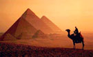
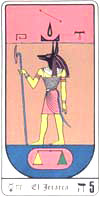
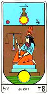
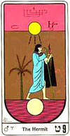
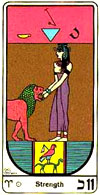
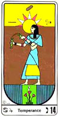
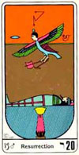

Las creencias del pueblo ocupaban un lugar principal en sus vidas, estaba
dirigida por sacerdotes, llamados Hierofantes, que además de formar a las
sacerdotisas, eran consejeros del Faraón. Los sacerdotes no tenían mucho
contacto con el pueblo pero si lo guiaban a través de sus enseñanzas. Los
templos eran lugares sagrados en donde solamente se admitía a los
sacerdotes y sacerdotisas, aunque en las celebraciones importantes el
pueblo podía asistir.
La naturaleza religiosa de la civilización egipcia se ve reflejada en todas
sus expresiones artísticas. Muchas de las grandes obras del Egipto antiguo
representan dioses, diosas, y faraones, considerados divinos.
El arte está caracterizado por la geometría sagrada en orden cósmico.
Dentro de las creencias religiosas espirituales tenían total conciencia de
la vida luego de la muerte, eran sabios en el conocimiento de la eternidad
del alma. De hecho decían que la vida era un tiempo de preparación para la
real vida, por eso se dedicaban tanto al armado de sus tumbas y de su
muerte en general.
Al principio de la civilización el conocimiento de la vida eterna era solo
para los faraones pero luego cuando llega el nuevo imperio fue extensivo a
todo el pueblo que vivía esperando la real vida futura eterna. Uno de los
rituales que seguían luego de la muerte física era la momificación del
cuerpo, a los cadáveres les extraían los órganos y cubrían el cuerpo con
resinas para preservarlo una vez terminados estos pasos eran envueltos en
lino.
En la cámara funeraria se depositaban alimentos y pertencias del fallecido,
para su uso en la otra vida. Los egipcios creían que el espíritu de los
difuntos era conducido por Anubis hacia el lugar del juicio, en la "sala de
las dos verdades", y el corazón del muerto, que era el símbolo de la
moralidad del difunto, se pesaba, en una balanza, contra una pluma que
representaba el Maat, el concepto de verdad, armonía y orden universal.
Si el resultado ...
era favorable, el difunto es llevado ante Osiris, sin
embargo, Ammit, "el devorador de corazones", que se representaba como un
ser mezcla de cocodrilo, león e hipopótamo, destruía aquellos corazones
cuya sentencia resultaba negativa, impidiendo su inmortalidad.
El Libro de los Muertos contenía 190 fórmulas mágicas, diferentes para cada
individuo, las cuales eran depositadas junto al difunto, o grabadas en los
muros de la tumba para facilitar su viaje por la Duat; también contenía las
palabras adecuadas a utilizar en su juicio.
Muchos de los hallazgos en el arte, la arquitectura, la religión, hicieron
pensar a muchos historiadores que se trataba de una civilización venida de
otro planeta. En las grandes culturas que habitaron este bendito planeta se
pueden encontrar pinturas rupestres en las cuales aparecen hombres con
escafandras, naves o símbolos que denominan alguna estrella de nuestro
cielo. A los científicos les ha llamado la atención el grado de
sofisticación de la tecnología egipcia, ya que algunas obras no se
entienden con los sistemas tecnológicos de su época.
Los egipcios medían el tiempo con dos calendarios diferentes: el lunar, el
solar llamado civil. El calendario lunar seguía los ciclos de iluminación
de la luna.
El calendario solar era de 12 meses de 30 días más cinco días. Tomaban como
referencia
para el comienzo del año el ascenso de Sirio en el momento que
sale el sol, y en su mismo sentido. Sirio es la estrella más luminosa de
nuestra galaxia. Por lo tanto su calendario es sideral ya que lo relacionan
con una estrella. Cada cuatro años la salida de Sirio se retrasaba un día,
lo que implicaba que el año era de 365,25 días.
Los astrónomos egipcios sabían que el año duraba 365 días, pero no
consideraron que duraba unas horas adicionales, que no completaban un día.
Al no ser contadas estas horas, se acumularon y el calendario civil egipcio
se desplazaba días hacia atrás con respecto del calendario astronómico, a
este desplazamiento se le llama ''desfase de tiempo''.
Tarot egipcio
El origen de estos naipes proviene del antiguo Egipto y de una derivación
del famoso "libro de Thoth" o libro sagrado cuyo origen se cree fue
realizado en hojas de oro y dictado por Thoth "Dios Egipcio" que era el
encargado de prever el futuro y la medida del tiempo.
Parece ser que en la época de los Tolomeos a Hermes se le llegó a
considerar la encarnación del Dios Thoth, y que también se le tuvo como un
gran rey en Egipto.
Con respecto al tarot los arcanos mayores se cree que fueron obra suya,
plasmados en la tabla esmeralda, que era una piedra preciosa en la que se
grabó la tabla mágica, y que fue más tarde encontrada en la tumba de
Hermes. A esta tabla se la puede equiparar con las tablas que se
establecieron en la ley que Moisés. Muchos de los símbolos que aparecen en
el "libro de Thoth" se dice que proceden de enseñanzas de antiguas
civilizaciones que poblaron la Tierra hace casi ochenta siglos, y que
dejaron esa huella con esos grabados, muchos de ellos muy actualizados hoy
en día.
El "libro de Thoth" se escribió antes de que se construyeran las pirámides
e incluso desde el comienzo de la civilización egipcia. En ese libro se
condensaba todo el Universo, los animales, la civilización, el mundo
material y espiritual, el mundo intelectual, el cielo, lo divino, lo humano
y el cosmos.
Muchos grabados de este libro tienen que ver con la astrología y de ahí que
haya una cierta similitud en parte de su interpretación. Se cree que la
creación de ese libro fue causa de una gran información cultural de la
época y de un deseo de explorar y descubrir el progreso, la ciencia, y la
evolución de la vida.
De esos grabados ha derivado la creación de los arcanos mayores y menores.
El libro se componía de símbolos y jeroglíficos en los que se concretaba la
sabiduría del maestro Thot plasmada en 78 láminas de oro puro con las
figuras de los Arcanos mayores y menores, y en él estaba contenida "aquella
cosa que da conocimiento a todo lo demás".
Los arcanos mayores son 22 y los menores 56, lo que nos da un total de 78
cartas. Ese conjunto de cartas se les denomina "Tarot" o "Tarot Egipcio" y
es el que se emplea a través de los siglos y las culturas como método
adivinatorio.
El Tarot Egipcio se utiliza como método de detección y predicción por
inspiración, ya que sus enseñanzas se refieren a dos mundos: el oculto y el
manifestado.
Todas las investigaciones reconocen al Tarot Egipcio como una de las más
perfectas formas de interpretación, tanto para revelar misterios del
inconsciente, como para las cosas de la vida cotidiana, ya que revela
siempre cosas ocultas y ofrece al consultante los más sabios consejos,
encontrando el problema y de ésta manera aparece la solución.
Los Arcanos
ARCANO NUMERO 1 - EL MAGO
Observamos en la parte superior los ojos que representan la mirada del
padre. El mago está de perfil lado derecho, de su frente sobresale la
serpiente indicando que está levantado, que es un maestro autorrealizado
que elevó su kundalini.
En la mano izquierda el báculo de poder, que simboliza la médula espinal
señalando el infinito, con la mano derecha señala la tierra, indicando que
la domina con la ciencia que hay que subir desde abajo, pues no se puede
subir sin antes bajar. En su vestido hay un triángulo con el vértice hacia
arriba, esto representa la triada, a un lado hay una mesa que representa
los 4 elementos (tierra, agua, fuego, aire) el plano físico. Sobre la mesa
hay varios elementos: la espada de poder representando energía masculina,
el cáliz representando energía femenina, y una luna. Bajo la mesa hay un
ibis, el ave fénix, el espíritu santo que se encuentra debajo porque todo
lo que está sobre la mesa debe basarse en la energía divina del fuego
sagrado del espíritu santo.
Debajo del mago en las aguas de la vida encontramos la piedra cúbica,
simbolizando la piedra filosofal, base de la creación.
Este arcano simboliza lo que se inicia, lo que comienza, el uno, la unidad,
es el espíritu divino en cada persona. El Mago es el adivino, el
ilusionista, es original, creativo, espontáneo, hábil, posee fuerza de
voluntad, puede ser ingenuo, dominante y estratégico, muy buen comunicador.
Es Thoth o Hermes Trimegisto, representa a este personaje casi divino en el
Panteón Egipcio por lo que tiene en si mismo toda la sabiduría, inspiración
divina, creatividad a niveles superiores. Formación de la Conciencia a
partir del inconsciente, la constitución de las Fuerzas elementales del
individuo, los sentidos. Conexión con los poderes cósmicos, entidades de
planos elevados.
Significa buen comercio, comunicación, y destreza en el trabajo,
diplomacia, astucia, ingenio, y picardía del comerciante que sabe convencer
al cliente incluyendo a veces mentiras y subterfugios. Obstáculos que se
vencen, iniciativas que se encaminan. Representa al hombre, al padre, al
consultante.
ARCANO NÚMERO 2 - LA SACERDOTIZA
En las aguas de la vida aparecen dos columnas del templo de Isis, una
blanca Jakin y una negra Boaz, cada una con cuatro peldaños significa los
cuatro cuerpos. Arriba aparece una maestra sentada entre dos columnas más
grandes. Ella está dentro de un templo, está hacia nosotros por eso las
columnas están al revés. El estar sentada nos indica su aspecto pasivo. En
su regazo un libro medio abierto que cubre a medias con su manto indicando
que ella es la sabiduría, ella trabaja con el registro Akashico, ella
enseña la kábala. En su pecho una cruz ansada, el símbolo de la vida, el
fundamento, Venus. La cruz del tao, la cruz sobre el pecho desnudo
significa que posee las virtudes. La serpiente sobre la cabeza indica
maestría, elevó su kundalini. Sobre su cabeza los cuernos del toro sagrado
Apis simbolizando un dominio sobre los egos. El círculo es la serpiente que
se muerde la cola y representa la madre cósmica. El velo que cae sobre su
rostro es el velo de Isis.
Este arcano representa la sacerdotisa, la ciencia oculta, la madre divina.
Es símbolo de dualidad receptora y productora. La sacerdotisa es la verdad
que se impone, la intuición certera, la generosidad, la contención.
La sacerdotisa nos nutre con sentido común, serenidad, objetividad. Es
previsora/o, perceptiva/o, sagaz, y perspicaz. La sacerdotisa representa
sabiduría, misticismo, protección de la Diosa Isis, altos ideales, la diosa
eterna de lo femenino, el conocimiento firme, sereno, lo misterioso, el
sexto sentido, la luz interior, el amor platónico.
Esta carta nos dice que la pasividad es buena durante un tiempo pero que es
preciso estar alerta para hacer lo que sea necesario porque en estado
pasivo demasiado tiempo puede ser causa de debilidad en nuestras vidas.
Mostrar apertura a las posibilidades. Permitir y permitirse la evolución.
Dejar que lo que existe florezca. Buscar lo que está escondido.
ARCANO NÚMERO 3 - LA EMPERATRIZ
En la parte central aparece una mujer coronada por 12 estrellas que
representan las columnas del templo de Dios. Sobre su cabeza una copa y de
ella asomando una serpiente símbolo de la maestría, elevada su kundalini.
En su brazo derecho el báculo de poder, con la mano izquierda intenta
alcanzar una paloma que representa el fuego del espíritu. Su ropaje es
solar, todo indica que es el alma Cristificada, está sentada sobre una
piedra cúbica que representa la piedra filosofal. En las aguas de la vida
hay una luna bajo los pies indicando su basamento en la energía femenina.
Este arcano es la emperatriz, es la Luz Divina, la Luz en sí misma, es la
Madre Divina. La madre celeste que significa producción material y lo mismo
en el campo espiritual producción espiritual. Es el espíritu divino
inmortal de cada ser viviente.
La Emperatriz es una mujer madura embarazada. Es la Venus de la belleza, el
amor y la fecundidad. Representa el principio de la Madre Naturaleza, llena
de fuerza regenerativa. Representa la actividad de la mente subconsciente.
La experiencia de nuestra propia conciencia, nace de ella, así como la
diversidad de la vida. Reina del corazón, en ella no caben los procesos
analíticos. Reina por el Amor. Ella es holística, intuitiva, del corazón.
Sus procesos son cíclicos, relacionados al hecho de ser madre y a la
menstruación. Por ser mujer, guarda una relación cercana con la Madre
Natura y los ciclos de la Luna. Ella es fluida, no restringida, es
inclusiva de toda la vida, no importa si está en orden o no.
Nos muestra el papel de madre ella da a luz, sustenta la vida, expresa
ternura, cuida y atiende a los demás, puede trabajar con niños, crea su
realidad, su entorno, materializa sus deseos,
liderazgo femenino, manifestaciones artísticas, su poder de acción están
ligados a su sensualidad e intuición, todo está bien a su alrededor,
abundancia de todo tipo. Es posible que se concrete un matrimonio o
sociedad, es oportuno, es positivo el vínculo.
ARCANO NÚMERO 4 - EL EMPERADOR O FARAÓN
De la frente del emperador sobresale la serpiente símbolo de maestría,
kundalini elevada. La corona formada de un áspid pertenece a Isis, sobre su
cabeza un bonete de cuatro puntas representando los cuatro elementos. En su
mano derecha sostiene el báculo de poder, se encuentra sentado sobre la
piedra cúbica que tiene adentro un gato de fuego protector. En las aguas de
la vida se encuentra el bastón de mando.
El Emperador es el que establece fronteras definidas, particulariza y
limita. Papel de padre que sigue un plan, coordina, tiene potencia mental
para organizar y dirigir, conceptos mentales claros y sentido del orden en
sus pensamientos y sentimientos, control interno, piensa antes de actuar,
es introspectivo, reflexivo, meditativo, y tiene mucho poder de
concentración. Es poderoso y crea orden a partir de un caos, tiene el poder
de visualizar resultados y dominio de la inteligencia, representa al padre
espiritual.
Su representación numerológica es el 4: la forma, los cuatro elementos de
los presocráticos, el cuadrado. Es el arcano de Horus.
Este arcano nos trae sabiduría, autoridad, potestad. Indica la presencia
fuerte de un ser masculino puede ser un padre, un esposo, un jefe. También
simboliza que aparecen situaciones que aportan capacidad, confianza,
riqueza y estabilidad. Contactos afectivos intensos, gran dominio de sí
mismo.
ARCANO NÚMERO 5 - EL JERARCA O HIEROFANTE

En esta carta se ve al jerarca con su malla de guerra, sosteniendo a su
diestra el báculo de poder. Utiliza la máscara del chacal únicamente cuando
está oficiando para hacer justicia, simbolizando la suprema piedad y la
suprema impiedad de la Ley. En las aguas de la vida se encuentra la balanza
de la justicia indicando que los movimientos, acciones y reacciones del
cuerpo físico se basan en el equilibrio de la energía.
El arcano número 5 es grandioso, sublime, es el número de la ley. Nos
enseña el karma. Es la iniciación a la enseñanza de las ciencias. El
retorno hacia la gran luz.
Está relacionado con una mentalidad tradicionalista, enmarcada en los
dogmas y reglas sociales, timidez, tendencia a refugiarse en sí mismo, buen
consejero, a veces puede tener temores ocultos, un buscador de la verdad
que no se atreve a traspasar las barreras de lo dogmático y aceptable
socialmente.
Símbolo de Thot, escribano de los dioses; y una balanza pesando el
sentimiento y la inteligencia.2) la parte central es el dios Seth caminando
hacia la oscuridad. 3) la parte inferior es una barca, camino, a través del
Nilo, hacia el reino de los muertos
Su representación numerológica es el 5: la mente, el pentagrama, la
estrella de cinco puntas. Es el arcano de Seth, tinieblas y oscuridad. En
general el arcano representa la búsqueda, el haber vivido muchas vidas en
esta tarea de obtener conocimientos que le sirvan para encontrar la verdad,
el sendero de iluminación.
Este arcano nos trae un reencuentro con el pasado. Un consejero para el
consultante, un hombre sabio pero dogmático, un sacerdote, un matrimonio
religioso, un médico, un trabajo relacionado con religiones, un anciano, un
buscador. Cooperación que se presenta inesperadamente, ayuda de iguales o
superiores, sanamente.
ARCANO NÚMERO 6 - LA INDECISIÓN
Parado en las aguas de la vida se encuentra el discípulo frente a un
triángulo con el vértice hacia abajo. Su brazo izquierdo se encuentra
colocado encima del derecho. Todo ello significa que el discípulo está
caído, por ello siente más atracción hacia la medusa que simboliza el ego
que a la maestra que está a su izquierda. Este arcano se llama indecisión
porque el discípulo no sabe por cuál camino decidirse. En la parte superior
un jerarca de la ley sentado sobre un triángulo con el vértice hacia arriba
a, formado por el arco apunta con su flecha a la cabeza de la medusa como
símbolo de la divinidad asistiendo en la transformación del ego.
El arcano número 6 es el enamorado del tarot, que está entre el vicio y la
virtud, la virgen y la ramera, Venus y la medusa.
Esta carta representa la lucha entre el amor y el deseo. Es la mente al
servicio de la pasión, es la elección que siempre tenemos que enfrentar a
través de la vida, o nos dejamos llevar por la pasión o por la mente
racional, en general habla de relaciones o sensaciones en donde la pasión y
el deseo toman un papel preponderante, las elecciones en todo orden de
cosas, el tomar un camino determinado en donde se nos ofrecen dos o más
opciones, sin embargo también se nos muestra que en nuestro interno o
intelecto sabemos que es lo mejor para nosotros.
Es el arcano de Amón: lo secreto, la procreación.
Este arcano nos muestra un tiempo de pasión. Es preciso elegir entre dos o
más opciones que pueden ser en el amor de pareja, en donde se debe pedir
inspiración para tomar decisiones.
ARCANO NÚMERO SIETE - EL TRIUNFO
En esta carta aparecen en las aguas de la vida, dos esfinges, la blanca y
la negra que tiran su carro simbolizan las fuerzas masculinas y femeninas.
Un guerrero que represente el íntimo, está de pie en su carro de guerra, en
la piedra cúbica y entre los cuatro pilares que son la ciencia, el arte, la
filosofía y la religión, en las cuales se desenvuelve. También es la
representación de los cuatro elementos, los cuales maneja equilibradamente.
En su mano derecha la espada y en su izquierda el báculo de poder. La
coraza es la ciencia divina que nos hace poderosos. El guerrero debe
aprender a usar la espada y el báculo así logrará la gran victoria. En la
parte superior aparece Ra con las alas desplegadas dando gran protección al
guerrero.
El arcano siete representa las siete notas de la lira de Orfeo, los siete
colores del arco iris, los 7 vicios, las 7 virtudes. Es el carro de guerra
que atravesará por luchas y batallas, dificultades que vencerá siempre.
Simboliza a la mente que evoluciona para obtener el triunfo, tal vez no
total o completo pero es como “ganar una batalla”, es el poder determinar
el camino a tomar con la seguridad que tenemos las “riendas de nuestra
vida”.
Representa el triunfo en cualquier situación o emprendimiento. Este arcano
significa victoria, fama, después de muchos contratiempos se obtiene una
victoria que algunas veces es solo parcial.
ARCANO NÚMERO 8 - LA JUSTICIA

En este arcano aparece en las aguas de la vida la serpiente mordiéndose la
cola, formando el signo de la madre cósmica, el infinito, el cero. Una
mujer se encuentra arrodillada sobre un túmulo de tres escalones
representando agua, fuego, conciencia. La mujer sostiene la espada de poder
hacia arriba con la mano izquierda y con la mano derecha equilibra una
balanza, señalando el equilibrio que debe existir entre mente, corazón y
sexo. En la parte superior aparece otro símbolo de Ra.
El arcano número 8 es el juicio es el número de Job, es el número del
infinito. Las fuerzas vitales del fuego y el agua circulan entrecruzándose
en la novena esfera en el corazón de la tierra en forma de ocho. El arcano
número 8 es una mujer que equilibra las fuerzas. En un contexto más general
significa la Ley del Karma, la ley de acción y reacción.
Este arcano nos transmite que estaremos en situaciones vinculadas con la
ley. Trámites, y papeleos. También nos aporta armonía, equidad, recibir lo
que uno se merece por mérito o recibir el justo castigo. Buena salida legal
o económica, un buen consejo de alguien dotado de conocimientos, legal,
puede ser un matrimonio legal o un divorcio, la aparición de un abogado, o
un médico que dictamina su diagnóstico, una herencia.
ARCANO NÚMERO 9 - EL EREMITA O ERMITAÑO

En este arcano encontramos en las aguas de la vida una luna que sube. En la
parte media un anciano ermitaño en actitud de avanzar sosteniendo en su
mano izquierda la lámpara que le señala el camino, es la lámpara de Hermes,
de la sabiduría. Con su mano derecha se apoya en el bastón de los
patriarcas que representa la columna espinal con sus siete iglesias o
chakras. El ermitaño prudente y sabio, está envuelto en el manto protector
que simboliza la prudencia. Detrás de él se encuentra la palma de la
victoria. En la parte superior un sol que alumbra con tres rayos indicando
las tres fuerzas primarias a unirse con la luna. La luna sube y el sol
baja.
El arcano número 9 es la soledad en forma elevada, es la oportunidad de
encontrarse con uno mismo. Va en el camino buscando la luz, camino de
entrega y sacrificio del ego.
El arcano número 9 pide discreción y meditación. Privacidad en sus
proyectos y tareas. Tiempo de escuchar consejos con mucha prudencia, de dar
mucha cabida a la percepción personal.
Puede representar el vínculo con un médico, un sacerdote, un anciano, un
eremita o una persona que ha tomado la decisión de aislarse para pensar,
meditar, abnegación, un secreto o alguien que guarda un secreto, persona
que le resulta difícil enfrentarse a los hechos.
ARCANO NÚMERO 10 - LA RETRIBUCIÓN O LA RUEDA DE LA FORTUNA
En las aguas de la vida encontramos dos serpientes una solar y una lunar.
En la parte media la rueda de la fortuna o samsara, rueda de muertes y
reencarnaciones. Por la derecha sube la evolución, por la izquierda baja la
involución. Después de 108 vidas, la rueda da una vuelta completa. En la
parte superior la esfinge haciendo equilibrio sobre la rueda representa la
madre naturaleza. La esfinge es la intercesora elemental de la bendita
madre del mundo. En ella encontramos los cinco elementos: agua la cara del
hombre, aire las alas del águila, tierra, patas de buey, fuego garras de
león, éter el bastón.
En el arcano número 10 encontramos la rueda del destino, rueda de la
fortuna, rueda del karma, rueda de la retribución, sobre la rueda está el
misterio de la esfinge.
También representa cambios relacionados con revoluciones internas que dan
paso a una mentalidad diferente, se producen hechos que obligan al ser a
producir una forma diferente de enfrentar las cosas, el planeta está lleno
de misterios también el signo, entre ellas una fascinación por el fenómeno
de la muerte.
Su representación numerológica vuelve a ser La fortuna o suerte, se
presentan. Acontecimientos inesperados, suerte en juegos de azar, cambio
favorable. Avance, lo inevitable. Paciencia.
ARCANO NÚMERO 11 - LA PERSUASIÓN

En las aguas de la vida la piedra cúbica, y dentro de ella el ave zancuda,
sobre esta la paloma del espíritu santo. Al medio una mujer cierra las
fauces de un león furioso, indicando que esta es superior a la violencia.
En la cabeza la corona y de su frente asoma la serpiente indicando
maestría. El león es el elemento fuego también representa el oro, los
cuerpos solares.
El arcano número 11 se conoce como la persuasión. Una mujer hermosa que
tranquilamente cierra con sus manos las fauces de un furioso león.
Este arcano brinda mucha fuerza interna, para soportar los avatares de la
vida, valentía, fuerza moral, ideas que serán defendidas con pasión.
Representa al espíritu dominante venciendo todo obstáculo. Esta carta nos
aporta fuerza física, fe, conquista, representa el obstáculo vencido,
heroísmo, resolución, determinación. Período de confusión breve seguido de
gran intuición. La suavidad del amor vence la furia del ego.
ARCANO NÚMERO 12 - EL APOSTOLADO O EL AHORCADO
En las aguas de la vida el pentáculo de Salomón, variante de la estrella de
6 puntas. Las tres puntas superiores representan la triada divina las tres
de abajo representan hombre, mujer e hijo. En el medio 2 columnas con 9
peldaños y entre ellas un hombre colgado de un pie con sus manos atadas.
Esto simboliza el trabajo interno de entrega, paciencia y dedicación para
la iluminación del alma. Es el fundamento de la Tierra celestial, es el
símbolo de la alquimia sexual, es el sacrificio y la obra realizada.
El Apostolado nos muestra a una persona con disposición al sacrificio, a
entregarse a los demás, ya sea en la amistad o en una relación amorosa, a
una causa que generalmente tiene que ver con ideales de tipo espiritual,
políticos o de obras sociales, también nos habla de la paciencia, de esa
cualidad que tiene que ver con la ciencia de la paz.
Este arcano nos anticipa un tiempo de renuncia o sacrificio, período de
espera de los acontecimientos.
ARCANO NÚMERO 13 - LA INMORTALIDAD
En este arcano, el trigo representa el renacimiento, al igual que las
flores. Un jerarca de la ley corta unos manojos de trigo, que representan
los valores, el capital que trae cada ser humano. Este arcano tiene
representación física e interna ya que también simboliza la muerte del ego.
Realmente la muerte es el regreso a la matriz. La vida y la muerte son dos
fenómenos de una misma cosa. La muerte es mutación, cambio y así es la
psiquis de este arquetipo, cambiante, le da término a las cosas o
relaciones definitivamente, aunque les significa un largo proceso mental
finalmente cierra la puerta y comienza una nueva etapa.
El arcano trece simboliza el espíritu en renovación. Es el arcano de
Amón-Ra, el dios supremo.
Esta carta nos anuncia una gran trascendencia, renovación, cambios
inesperados, puede tratarse de una muerte física o una muerte simbólica.
Siempre marca el final de alguna situación que puede ser mental, física o
espiritual. Pérdida de un trabajo o ingreso, enfermedad generalmente sería,
indolencia, apatía, estancamiento, cambios lentos, transmutación, cambio de
una situación a otra para mejor. Para poder vivir es preciso morir.
ARCANO NÚMERO 14 - LA TEMPERANCIA O TEMPLANZA

En las aguas de la vida encontramos 3 flores y en la del medio una
serpiente que sube. Estas flores representan al íntimo, al alma espiritual
y al alma humana. También las flores son el fuego sagrado, la materia prima
y la mezcla. En el medio un ángel que tiene en su frente un sol. El ángel
tiene 2 copas y está mezclando elixires, una copa es de oro y tiene elixir
rojo, la otra es de plata y tiene elixir blanco, la mezcla da como
resultado el elixir de la larga vida.
Este arcano representa un carácter y una estructura mental bastante
equilibrada. Con esta carta se tiene la virtud del ángel que da la
capacidad de cambiar los defectos en virtudes, otorgando gran evolución.
Esta carta nos indica actuar con moderación, paciencia, y paz interna para
balancear los acontecimientos de la vida, recibirlos y acogerlos para
transformarlos en bien. Nos marca un tiempo de organización, de
administración, en el cual encontraremos en otros seres compatibilidad,
amistad, apoyo, y además protección divina.
ARCANO NÚMERO 15 - LA PASIÓN O EL DIABLO
En las aguas de la vida se representa la ley, en el medio un ser aparece
sosteniendo en su brazo izquierdo el bastón de mando y en su brazo derecho
una serpiente que sube. Con el mandil cubre la sabiduría de la misma cuelga
una cola. Tiene cara de animal que representa a la humanidad que se ha
degenerado. La pasión o el diablo representan al entrenador psicológico y
guardián de las puertas del santuario para quienes hayan podido superar las
pruebas impuestas por el diablo.
El arcano 15 representa a Lucifer (el diablo) y es la oportunidad para
lograr la iluminación y convertirse en un ser androgino. Lucifer, lucí
quiere decir “luz” y fer “fuego”, es el guardián de la puerta y tiene las
llaves para entrar al templo. Representa al espíritu encadenado. Dejándose
llevar por las pasiones, sugestiones y obsesiones. El diablo o lucifer era
el guardián del secreto, custodio de la real iluminación del ser para que
luego pase a los templos de la luz.
Esta carta nos anticipa vivencias o situaciones de violencia, de
controversia, donde pueden estar presentes la maldad, la falsedad, el
engaño, la decepción, la traición, encadenamiento al mal, a veces
voluntario, esclavo de lo material, fracaso, culpa, violencia, ruina,
sentimiento de culpa, auto castigo, incapacidad para fijarse metas.
Curación de una enfermedad, abandono de lo físico por lo espiritual,
elevación de trabas insuperables aparentemente, dinero a veces no bien
habido. Es preciso recordar que todo lo que está en nuestro alrededor es
creado por nosotros desde lo interno, si todo esto se presenta entonces lo
habrás creado para aprender que se puede salir a través de la iluminación
del alma.
ARCANO NÚMERO 16 - LA FRAGILIDAD
En las aguas de la vida el báculo de poder, el bastón de mando y el látigo
que representa la fragilidad. A ambos lados de estos símbolos las dos
serpientes. Desde la parte superior desciende el rayo de la justicia
cósmica destruyendo la torre que los cabalistas llaman la torre de babel.
Dos personajes son precipitados al fondo del abismo, uno a la derecha y
otro a la izquierda, caen haciendo el signo de la estrella invertida,
simbolizando la caída.
Este arcano muestra las caídas que suceden actuando desde el ego, por eso
es preciso despertar conciencia, esta carta pide ser luz en el pensamiento,
ser luz en el sentimiento y ser luz en la acción.
Esta carta representa a la mente preparándose para recibir la liberación,
se expresa conociendo lo efímero de las cosas y las relaciones de su
entorno, generalmente este cambio o caída es repentino por lo que la mente
o psiquis tarda en darse cuenta que la vida también debe cambiar en toda su
dimensión, que debe producir cambios, la mayoría de las veces se resiste y
es todo un proceso doloroso, los resultados en general son un cambio de
visión de las cosas.
Expresa el espíritu frente a la catástrofe. Cómo se manifiesta frente a la
caída de estructuras largamente conservadas, a veces de vidas pasadas por
lo que en general es visto como catastrófico.
Este arcano nos anuncia cambios bruscos y repentinos. Destrucción.
Bancarrota. Ruptura de relaciones. Sucesos inesperados. Adversidad.
Interrupción. Pérdida de dinero, amor o afecto. Recordando siempre que todo
es creado por nosotros esta carta es para superar la conciencia de pérdida.
El valor de lo temporal se exalta en función de lo eterno, lo perecedero
tiene vital importancia en el devenir de las cosas.
ARCANO NUMERO 17 - LA ESPERANZA
En las aguas de la vida dos triángulos uno celestial y otro terrenal. En la
parte media una mujer está regando la tierra con los dos elixires, el
masculino y el femenino, en su cabeza una flor de loto indicando sus
chakras desarrollados e iluminados. En la parte superior brilla la estrella
de Venus de ocho rayos, simbolizando que después de las iniciaciones del
fuego, vienen las de la luz.
Este arcano es la estrella radiante y la juventud eterna, en esta carta
aparece una mujer desnuda que esparce sobre la tierra la savia de la vida
universal, que sale de dos vasos uno de oro masculino y otro de plata
femenino.
La estrella de Venus simboliza la iniciación venusta que sucede cuando el
ser cristifica su alma, cuando el cristo entra en el alma. Para encarnar la
estrella es preciso trabajar el elixir de la savia de la vida que se logra
a través de la sexualidad sagrada.
Este arcano simboliza al espíritu dotado de esperanzas. Es el arcano del
dios Khunum, divinidad de la creación y el inicio.
Esta carta nos dice que en el próximo tiempo los dioses estarán a favor.
También puede ser un anticipo de embarazo. La estrella trae esperanza,
inspiración, buena salud, amor espiritual, altruismo, idealismo, optimismo.
Brillantes perspectivas.
ARCANO NÚMERO 18 - EL CREPÚSCULO O LA LUNA
En las aguas de la vida un escorpión dentro de un triángulo invertido
significa que es preciso transformar a través del auto sacrificio para
poder desplegar las alas del alma y volar. En el medio dos pirámides, una
blanca y una negra, simbolizando la polaridad. Dos perros o lobos también
uno blanco y otro negro, uno simboliza los sentimientos y el otro la
personalidad. Esta carta muestra la lucha entre estas fuerzas.
El arcano 18 es luz y sombra, magia blanca y negra. Esta carta tiene
características de ambigüedad que puede darse en la estructura psíquica,
así como los temores ocultos, los traumas de niñez o adolescencia con
problemas de rebeldía, todo lo ocurrido en el pasado incluyendo vidas
pasadas traumáticas que han quedado en el archivo profundo de la psiquis
del ser. También el crepúsculo es una carta que nos indica una intensa
imaginación y creatividad. El espíritu imaginativo e inspirado. Tres fases
de la luna, creciente, llena y menguante, vida, plenitud y vejez. El dios
Khepri en figura de gato blanco en la parte central, con las pirámides de
Keops, Kefrén y Micerinos al fondo. El escorpión de frente, con el desierto
como fondo: el poder protector de Khepri. Su representación numerológica
vuelve a ser el 9. Es el arcano del dios Khepri, la alegría luego de la
estabilidad entre las polaridades.
Esta carta nos anticipa un tiempo de depresión y conflicto. Inspiración,
imaginación, intuición, peligros imprevistos, precaución, engaño, egoísmo,
falsas promesas, calumnias, desgracias. Superficialidad, peligro,
explotación. Es un buen periodo para estar atentos a la búsqueda del
equilibrio observando las dualidades sin llegar a vivenciar los extremos.
ARCANO 19 - LA INSPIRACIÓN
En las aguas de la vida tres flores representan las tres fuerzas primarias.
Al medio una pareja que se toma de las manos, formando la llave tao. En la
parte superior un sol radiante sobre sus cabezas con siete rayos que
representa los grados de iniciación en la orden del fuego. Este arcano nos
enseña que por medio de la transmutación del amor logramos la liberación
final del ego.
Este arcano es la alianza, representa el fuego creador, la piedra
filosofal. Los antiguos adoraban al sol bajo la simbólica figura de una
piedra negra, piedra fundamental del templo, que permite al ser
transformarse en un dios despierto.
Esta carta nos habla de una mentalidad optimista, de mucha energía
positiva, paz. Si simboliza a una persona esta será aquella que siempre se
propone metas las mentaliza en que dicha meta, ya está a su alcance, en
general tiene una vida muy tranquila y sin muchos esfuerzos logra lo que se
propone. Representa el espíritu en paz y feliz. El Sol, fuente de vida,
representación del dios Geb. Es el arcano de Geb, la Tierra.
Cuando se elige esta carta ella nos anuncia felicidad compartida, paz con
hombres y dioses. Paz Felicidad Amor puro Prosperidad. Éxito. Relaciones
favorables Alegría. Buenos amigos. Calor Sinceridad. Celebración. Logros en
las artes. La alegría se alberga en la templanza es preciso consagrarse al
entorno cercano, el amor puro es tu vestidura.
ARCANO NUMERO 20 - LA RESURRECCIÓN

En las aguas de la vida una columna, símbolo de edificación, la base de la
columna es la piedra cúbica. De las dos columnas que se presentaban en
otros arcanos, aquí solo quedó la blanca, símbolo de purificación. Al medio
una momia y de ella se escapa un gavilán con cabeza humana que vuela hacia
los mundos del espíritu, representa al alma. Es indubitable que al
despertar conciencia nos transformamos en gavilanes con cabeza humana,
pudiendo volar libres por el espacio estrellado. Sobre la cabeza del
gavilán y de la momia, un símbolo representativo de la glándula pineal
indicio de iluminación.
Este arcano es la resurrección que viene luego de la muerte del ego. Es
preciso morir para poder vivir. No puede haber individualidad donde existen
múltiples egos, por eso de la única forma que se puede vivir
individualmente es habiendo transformado al ego en energía crística.
El arcano 20 representa al espíritu dotado de conciencia cósmica.
Esta carta nos anticipa que llega el resurgimiento. Fe en la vida después
de la muerte. Reconocimiento. Deseo de inmortalidad. Sentencia legal
favorable. Cambio importante por suceso que despierta a la persona a la
realidad.
ARCANO 21 - LA TRANSMUTACIÓN
En las aguas de la vida una flor de cuatro pétalos simbolizando el chakra
muladhara. Una mujer que representa la verdad tocando un arpa, está
pulsando la lira de 9 cuerdas para encontrar la nota clave. En la parte
superior están los cuatro dioses de la muerte, representando también los
cuatro elementos. Sobre los cuatro dioses encontramos la serpiente sagrada
que ilumina la esfera de Ra concedida al adepto osiriano hijo de la luz.
El arcano 21 es la corona de la vida, el regreso a la luz, encarnación de
la verdad en nosotros. Este arcano tiene un significado psicológico muy
bello, es la capacidad de cambiar armoniosamente lo interno y lo externo
con la magia del pensamiento y el sentimiento, como un mago, sin dolor,
solo deseándolo intensamente en armonía para todos, la mentalidad del
sujeto ha evolucionado al punto que puede transformar lo negativo en
positivo, la oscuridad en luz.
Esta carta nos anuncia tiempos de amistad, viajes y mudanzas. Triunfo. Paz
interior. Realización. Perfección. Éxito después del esfuerzo. Seguridad.
Cumplimiento. Premio a un duro trabajo. Vida eterna. Cambios cósmicos. El
éxito está al alcance de las manos, el mayor apoyo se encontrará en las
amistades, usar la creatividad y la imaginación.
ARCANO NÚMERO 22 - EL LOCO
En la parte superior de esta carta encontramos la luna negra y la luna
blanca. Al medio un mago con el bastón de los patriarcas en una mano y la
cruz ansata o ank o tao en la otra mano. Se encuentra parado sobre un
cocodrilo que abre sus fauces esperando para devorarlo. El cocodrilo es
Seth representa la personalidad, los agregados psicológicos o yoes, siempre
a la espera de aquel que se deja caer para devorarlo. El mago valientemente
empuña la cruz para defenderse. El mago se encuentra cubierto por una piel
de tigre, asociado esotéricamente con la muerte mística. El espíritu
dejando atrás el mundo de las formas. Es el arcano de Shu, la rapidez.
Este arcano representa al espíritu encarnado. Un alma muy joven con fuertes
experiencias de vida. Un ser dotado con mucha fe. Es el arcano del dios
Neith, acierto.
Esta carta nos transmite un llamado de atención a no dar pasos inciertos, y
tampoco vivir en la energía de la duda, siempre pedir intervención divina.
Lo que habitualmente llamamos locura es el camino hacia la cordura, en el
tarot el Loco no es el Loco, sino el discípulo puesto en camino, llamado
loco por quienes no tienen el valor de emprender la búsqueda alquímica del
conocimiento.
Esta carta nos anticipa que la real felicidad está en tu nueva vida.
También nos muestra extravagancia, hacer cosas por impulso sin
reflexionarlas, lo que puede aparecer a veces como un delirio. Entusiasmo y
pasión en lo que se hace.